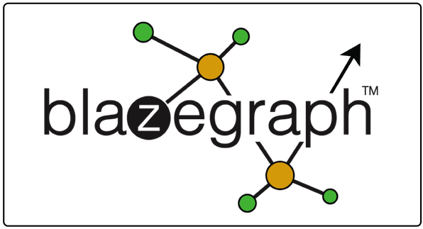
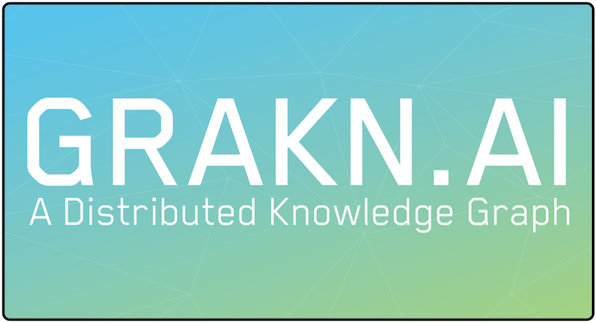
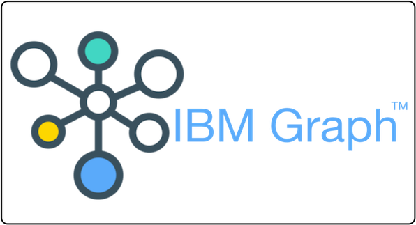
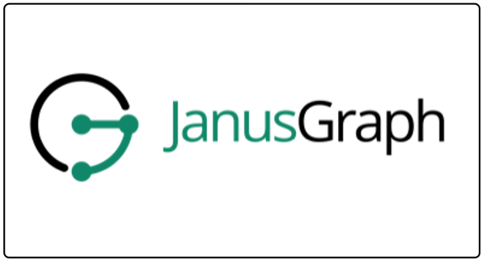
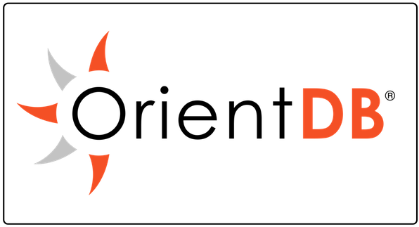
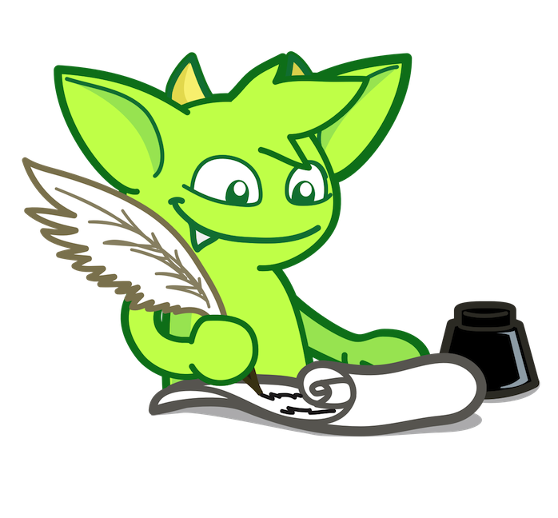
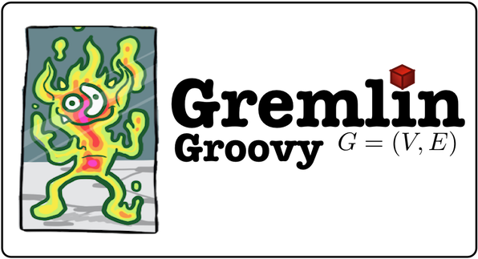
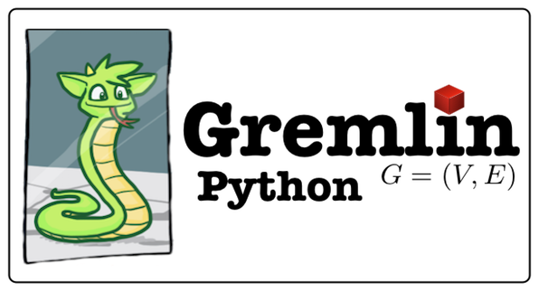
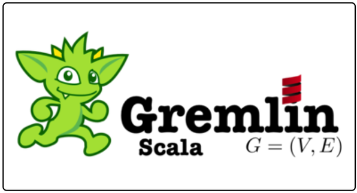
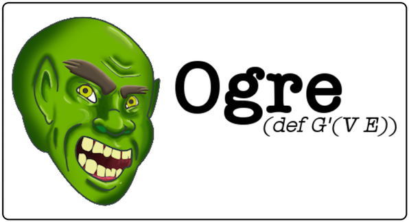

Data System Providers
When a data system is TinkerPop-enabled, its users are able to model their domain as a graph and analyze that graph using the Gremlin graph traversal language. Furthermore, all
TinkerPop-enabled graph systems integrate with one another allowing providers to easily expand their system's offerings as well as allowing users to choose appropriate graph technology for their
application. Sometimes an application is best served by an in-memory, transactional graph database. Sometimes a multi-machine distributed graph database will do the job. Or perhaps the
application requires both a distributed graph database for real-time queries and, in parallel, a Big(Graph)Data processor for batch analytics. Whatever the application's requirements, there
exists a TinkerPop-enabled graph system out there to meet its needs.
At an abstract level, every data system is ultimately a "graph system" because every data system supports the representation of "things" (vertices) and their respective relationships
to one another (edges). For instance, a
relational database may have a
people-table, where the rows denote person vertices and the columns denote properties of those individuals
(e.g. their name and age). Moreover, that relational database may also have a
knows-table, where two columns reference primary keys in the
people-table and the remaining columns
denote properties of those relationships (e.g. creation timestamp, strength of friendship, etc.). TinkerPop enables any data system to expose its implicit graph structure within the
lexicon of vertices and edges. From there, what differentiates each TinkerPop-enabled system are the various time/space-tradeoffs that were made for representing their "graph" in-memory,
on-disk, and across a multi-machine compute cluster. TinkerPop users have the luxury of choosing a graph system based on those design choices that are important for their application.
Moreover, they only need to concern themselves with learning the Gremlin traversal language as every TinkerPop-enabled graph system supports Gremlin.

It is (relatively) easy for a data system to become TinkerPop-enabled. There are two interface packages that need to be implemented with one of them being optional. Once implemented
the Gremlin traversal machine can talk to the provider's system and thus, so can any of their users' Gremlin traversals as well as any existing tools/technologies that have been designed
to interact with a TinkerPop-enabled system.
- The Graph (required): These foundational interfaces define the semantics of the operations on a graph, vertex, edge, and property. Once implemented, the provider's
data system can immediately be queried using Gremlin OLTP. However, providers may want to leverage a collection of provider-specific compiler optimizations called traversal strategies
which can leverage their system's unique features (e.g. global indices, vertex-centric indices, sort orders, sequential scanners, push-down predicates, etc.).
- The GraphComputer (optional): All OLAP-based graph processors must implement the primary graph interfaces mentioned above as well as a set of parallel-processing
message-passing interfaces. However, it is possible for a data system to only implement the primary graph interfaces and still provide OLAP support to their users by integrating their
system with an existing
GraphComputer implementation such as, for example, SparkGraphComputer (provided in Apache's distribution
of TinkerPop).
Finally, there are other tools and technologies that the provider can leverage from TinkerPop such as Gremlin Server, Gremlin Console, and the like. The purpose of Apache TinkerPop is to
make it easy for providers to add graph functionality to their system and/or to build a graph system from scratch and immediately have a query language, server infrastructure, metrics/reporting
integration, cluster-based analytics and more.
- Gremlin traversal language: The primary benefit of TinkerPop is the Gremlin graph traversal language. This language was designed specifically for graph analysis and
manipulation and is not complicated with an explicit JOIN syntax.
- Gremlin traversal machine: Every Gremlin language variant compiles to a language agnostic bytecode representation. That bytecode is ultimately translated to a machine-specific traversal. It is the responsibility of the Gremlin traversal machine to execute that traversal as a
real-time OLTP query or as an analytic OLAP query (or both). Note that the Gremlin traversal machine is not bound to the Gremlin language. Any language can take advantage of the the
Gremlin traversal machine by simply translating itself to Gremlin bytecode. In fact, compilers currently exist for SQL and SPARQL. However, using alternative languages for graph computing leads to significantly more complicated queries
and typically does not match the expressivity provided by Gremlin.
- TinkerGraph: TinkerPop provides a simple, non-transactional, in-memory graph system called TinkerGraph. TinkerGraph is useful for exploring graphs that can fit
in-memory, for doing tutorials and training without the overhead of database setup, etc. TinkerGraph boasts both OLTP and OLAP traversal machine support.
- Gremlin Console: A command line REPL is provided called Gremlin Console. This console is useful when learning TinkerPop as users can load provided datasets into a
graph system and explore the Gremlin language without the overhead of creating a full-blown software project. Furthermore, the Gremlin Console is used extensively in production scenarios
because it allows system administrators to interact with a local or remote graph to gather statistics, manually explore the data to ensure data integrity, and other useful tasks.
- Gremlin Server: It is typical for a graph database to exist on a separate machine from the user's application code. Gremlin Server bridges the network-divide
allowing users to seamlessly submit traversals for remote execution over a web-sockets based binary protocol. If provider already has a server, they can leverage TinkerPop-specific
components as needed (e.g. implement
RemoteConnection). Gremlin Server also provides an HTTP-based API, support for Ganglia/Graphite/JMX/more
metrics, and a traversal routing framework for intelligent data/traversal co-location within a distributed graph database's machine cluster.
- SparkGraphComputer: Apache Spark™ is a Big Data OLAP processor that simplifies the creation and execution of distributed data analytics.
SparkGraphComputer turns Spark
into a Big(Graph)Data processor via the OLAP component of the Gremlin traversal machine. Users do not have to learn Spark's data processing language as Gremlin traversals execute
over Spark. For graph system providers, they can boast Spark integration once a custom InputRDD (or InputFormat) is developed.
- Hadoop support: Apache Hadoop® has become a staple technology for Big Data applications. In TinkerPop,
SparkGraphComputer can pull data
from the Hadoop File System (HDFS). TinkerPop provides a collection of Input- and OutputFormats for different graph serialization standards as well as tooling that makes it easy for users
to interact with HDFS from the Gremlin Console or their application.
Information on how to build implementations of the various interfaces that TinkerPop supports can be found in the Provider Documentation.
TinkerPop-Enabled Graph Systems
Apache TinkerPop is always looking to point users to graph systems that are TinkerPop-enabled. Please read Apache TinkerPop's
provider listing policy for adding new projects to the listing below.
The listing is intended to help users identify TinkerPop-enabled graph systems and does not constitute an endorsement by Apache TinkerPop nor the Apache Software Foundation.

Blazegraph™ is a standards-based, high-performance, scalable, open-source graph database. Written entirely in Java, the platform supports Apache TinkerPop and RDF/SPARQL 1.1 family of specifications. A commercial version includes GPU acceleration.
 Azure Cosmos DB
Azure Cosmos DB™ is Microsoft's globally distributed, multi-model database service for mission-critical applications. Azure Cosmos DB provides turn-key global distribution, elastic scaling of throughput and storage worldwide, five well-defined consistency levels, and guaranteed high availability, all backed by industry-leading SLAs. It is multi-model with support for the Gremlin graph traversal language.
 DataStax Enterprise Graph
DataStax Enterprise Graph™, part of DataStax Enterprise's multi-model platform, is a real-time graph database built for cloud applications that need to manage complex and highly connected data. Built on the foundation of Apache Cassandra and Apache TinkerPop, DataStax Enterprise Graph delivers continuous uptime along with predictable performance and scale, while remaining operationally simple to manage.

GRAKN.AI™ is a distributed knowledge graph that brings knowledge ontologies and transactional data together to enable intelligent querying of data. Querying is performed through the language: Graql, a declarative, knowledge-oriented graph query language for retrieving explicitly stored and implicitly derived information, as well as to perform graph analytics and automated reasoning.

IBM Graph™ is a scalable, easy-to-use, fully-managed graph database-as-a-service that is administered through IBM's Bluemix cloud platform. IBM Graph is available 24/7 and managed by a team of experts so developers can focus on building their application. Based on the Apache TinkerPop stack for building high-performance graph applications, IBM Graph provides users with a set of simplified HTTP API calls and the Gremlin graph traversal language.

JanusGraph is an Apache2 licensed scalable, distributed graph database optimized for storing and querying graphs containing hundreds of billions of vertices and edges distributed across a multi-machine cluster. JanusGraph is a transactional database that can support thousands of concurrent users executing complex Gremlin traversals in real time. JanusGraph also provides an in-memory, compression-based OLAP processor as well as integrates with Apache TinkerPop's Spark OLAP processors.
 KeyLines
KeyLines™ is an Apache TinkerPop and Gremlin compatible JavaScript SDK for quickly and easily building powerful, custom and scalable graph visualization applications. The KeyLines SDK offers a rich library of functionality to help you visualize and explore the data in your graph database, including graph layouts, social network analysis measures, filtering, temporal graph visualization and geospatial graph analysis. It allows the visualization of complex graph data at scale.
 Linkurious
Linkurious™ is a browser-based graph visualization software to search, explore and visualize connected data. It is compatible with Apache TinkerPop and thus, any TinkerPop-enabled graph system. Linkurious provides enterprise-ready security (authentication, access rights, audit) and flexibility (API, linkurious.js JS graph visualization library) to help software architects successfully deploy graph capabilities within their organizations.
 Neo4j
Neo4j™ is the most widely used open source, transactional graph database with a large active user and customer community. Because of its scalability and ease of use, Neo4j is applied in a wide variety of use cases from fraud detection, access control to recommendation and investigative journalism. Along with the openCypher graph query language, Neo4j also supports Apache TinkerPop and currently serves as its OLTP reference implementation.

OrientDB™ is an open source distributed graph database with native support for Apache TinkerPop and the Gremlin graph traversal language. OrientDB handles relationships by using persistent pointers, rather than expensive join runtime operations. This guarantees a fast, constant O(1) time for traversing, no matter the database size. Furthermore, OrientDB is not only a graph database, but a multi-model database able to manage documents, keys/values, objects, full-text and spatial data.
 Stardog
Stardog™ is a graph database optimized for enterprise data unification. It supports both semantic graphs, via RDF, SPARQL, and OWL, as well as property graphs via Apache TinkerPop and Gremlin--it's the only graph database that supports both models over the same database, simultaneously. Stardog also supports hybrid data unification architectures, seamlessly blending data warehouse, system of record, and virtual query strategies. Stardog is suited for enterprise data silo challenges.
 Titan
Titan™ is an Apache2 licensed scalable, distributed graph database optimized for storing and querying graphs containing hundreds of billions of vertices and edges distributed across a multi-machine cluster. Titan is a transactional database that can support thousands of concurrent users executing complex Gremlin traversals in real time. Titan also provides an in-memory, compression-based OLAP processor as well as integrates with Apache TinkerPop's Spark OLAP processors.
 Tom Sawyer Perspectives
Tom Sawyer Perspectives™ is advanced graphics-based software for building enterprise-class data relationship visualization and analysis applications. It is a complete Software Development Kit (SDK) with a graphics-based design and preview environment. Tom Sawyer Perspectives combines visualization, layout, and analysis technology with an elegant platform architecture. Tom Sawyer Perspectives enables interaction with graph database systems via Apache TinkerPop.
Query Language Providers

With the growth of
NoSQL, for which graph databases are a subclass, many new database query languages have been developed. SQL has
always been the industry standard, but now there exists others such as
CQL,
Datalog,
and
XQuery. Even in the graph database space there is
SPARQL,
Cypher,
GraphQL, and of course, Gremlin. Much like the
Java virtual machine is a host to multiple
programming languages including Java, Scala, Groovy, Clojure, JavaScript, etc., the Gremlin traversal machine is a host to multiple query languages. The Gremlin traversal machine's
instruction set ensures
Turing Completeness and as such, any query language can compile to execute on the Gremlin traversal machine.
There are three types of language designers. Below, each type will demonstrate the "same traversal" expressed in different languages. Ultimately, they all compile to the Gremlin traversal
below which computes the average rating for the projects created by Gremlin's friends.
g.V().has("person","name","gremlin").
out("knows").out("created").
hasLabel("project").
values("stars").mean()
Distinct query language: Query languages such as SQL and SPARQL are significantly different from Gremlin in that they require a special purpose compiler in order to
generate a traversal. For this reason,
SQL and
SPARQL Gremlin compilers
currently exist. Note that, within reason, Gremlin compilers do not need to concern themselves with an optimal compilation (only a semantically correct compilation) as the Gremlin
traversal machine will leverage traversal strategies for both compile-time and runtime optimizations. Moreover, the language designer can rest assured that queries in their language
will be able to evaluate as either an OLTP or OLAP query. The example on the right is a SPARQL query that determines the average rating for Gremlin's friends' projects. It is because
of the Gremlin traversal machine, that that SPARQL query can immediately execute over Spark (for instance).
SELECT AVG(?stars) WHERE {
?a v:label person .
?a v:name "gremlin" .
?a e:knows ?b .
?b e:created ?c .
?c v:label "project" .
?c v:stars ?stars
}
Gremlin language variants: There are various
Gremlin language variants such as
Gremlin-Python. These languages
generate Gremlin bytecode utilizing the same naming/style-conventions as Gremlin-Java. However, where appropriate, they can deviate from convention in order to take advantage of the unique expressive qualities of the host language. For instance, Gremlin-Python supports index slices, attribute access, etc.
g.V().has('person','name','gremlin').
out('knows').out('created').
hasLabel('project').stars.mean()
Domain specific languages: A users's application logic typically represents its domain in terms of real-world objects, not "vertices" and "edges." While most application developers will become comfortable writing their traversals in the vertex/edge-lexicon of Gremlin, it may be desirable to create a domain specific language for, perhaps, business users. To do so is simple. The language designer extends Traversal and interacts with an underlying GraphTraversal exposing "high-level" steps that may ultimately be composed of a complex sequence of "low-level" vertex/edge-steps. A major boon is that the DSL designer does not have to worry about compiler optimization as the "low-level" GraphTraversal representation will ultimately be subjected to traversal strategies prior to OLTP or OLAP evaluation. The example on the right is a hypothetical SocialDSL that allows users to query their graph from the perspective of people, projects, etc. and is thus bound to that graph's particular social data schema.
SELECT(Average.of(Stars)).
FROM(Projects)
WHERE(Created.by(Friends.of("gremlin")))
TinkerPop-Enabled Query Languages
Apache TinkerPop is always looking to point users to TinkerPop-enabled graph query languages. Please read Apache TinkerPop's
provider listing policy for adding new projects to the listing below.
The listing is intended to help users identify TinkerPop-enabled compilers and languages and does not constitute an endorsement by Apache TinkerPop nor the Apache Software Foundation.

Gremlin-Groovy represents Gremlin inside the Groovy language and can be leveraged by any JVM-based project either through gmaven or its JSR-223 ScriptEngine implementation. It also serves as the Gremlin Console language.
 Gremlin-Java
Gremlin-Java represents Gremlin inside the Java8 language. Gremlin-Java is considered the canonical, reference implementation of Gremlin and is the primary compiler for all lambda-free bytecode due to its speed relative to other script-based, JVM variants.

Gremlin-Python represents Gremlin inside the Python language and can be used by any Python virtual machine such as CPython and Jython. Gremlin-Python traversals translate to Gremlin bytecode for RemoteConnection execution (e.g. Gremlin Server).
 Gremlin.Net
Gremlin.Net represents Gremlin inside the C# language and can be used by any .NET-based project. Gremlin.Net traversals translate to Gremlin bytecode for RemoteConnection execution (e.g. Gremlin Server).

Gremlin-Scala is a Gremlin language variant that uses standard Scala functions, provides a convenient DSL to create vertices and edges, ensures type safe traversals, and incurrs minimal runtime overhead by only allocating instances if absolutely necessary.

Ogre is a Gremlin language variant for Clojure. It provides an API that enhances the expressivity of Gremlin within Clojure, it doesn't introduce any significant amount of performance overhead, and it can work with any TinkerPop-enabled graph database or analytic system.
 SPARQL-Gremlin
SPARQL-Gremlin is a compiler used to transform SPARQL queries into Gremlin bytecode. It is based on the Apache Jena SPARQL processor ARQ, which provides access to a syntax tree of a SPARQL query.
 SQL-Gremlin
SQL-Gremlin compiles ANSI SQL to Gremlin bytecode and is useful for connecting JDBC reporting/business
intelligence tools to any TinkerPop-enabled graph system.